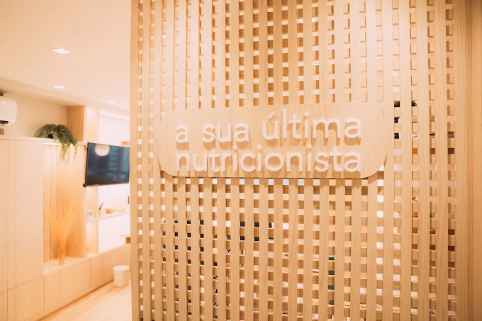

Para mulheres com rotina agitada que já tentaram de tudo e querem um plano que funciona todo dia!
Quero me inscreverO que você recebe
Não é uma dieta genérica. É um planejamento construído ao redor de quem você é.
Planejamento alimentar individualizado
Montado por mim, com cardápio separado pra semana e final de semana, diversas opções de troca e baseado na sua rotina real — incluindo interferências emocionais.
+20 listas de orientações personalizadas
Como beber água, como se organizar na semana, como usar suplementos, alimentos a evitar e muito mais — tudo explicado de forma prática.
Método RDD completo
Material completo de Redução de Danos: como sair da dieta sem culpa e voltar ao trilho. Pizza, hambúrguer, açaí, churrasco — a vida não para, e a gente sabe disso.
Análises mensais
A cada mês, identificamos juntas o que funcionou, o que travou e reformulamos o que for necessário. Você nunca vai ficar estagnada sem saber o que fazer.
Método exclusivo
O Método RDD (Redução de Danos) é o que diferencia um plano que funciona na vida real de um que só funciona no papel. Você vai aprender a sair da dieta e lidar com situações do dia a dia sem culpa e sem perder o rumo.
Tem também materiais específicos para restaurantes — desde redes do dia a dia até culinárias do mundo todo. Porque a vida acontece fora de casa, e você precisa criar autonomia sem ser refém de um PDF.
Pronta para ter um plano que funciona na vida real?
Quero me inscreverFit perfeito
Sim, é pra você se...
Você se identifica com algum desses:
Não é pra você se...
Esse perfil não vai funcionar bem:
Depoimentos
A forma de enxergar a nutrição, o acolhimento, o não julgamento. Faz com que não haja sofrimento algum no processo de mudança de hábitos.
Eu falo sempre que posso todo mundo deveria passar por uma nutri humanizada , que te enxerga além de números e medidas , vocês são fora da curva , sempre tem q palavra certa pra motivar e fazer a gente reconhecer o quão valioso é o processo da mudança , e esse slogan de vocês é tudo né : SUA ÚLTIMA NUTRICIONISTA e de fato será a última 😇😍😘😘
Duas amigas me indicaram e as avaliacoes delas foram ótimas! queria uma nutri que me desse um plano alimentar basico, prático e eficiente, e recebi um maravilhoso! a dieta foi adaptada aos meus habitos, preferências e horários, então está sendo muito fácil de seguir e é muito bom ja estar vendo resultados. tem dias que não consigo seguir 100% mas acho que pelo menos estou tendo mais consciencia das quantidades e a não exagerar. o grupo com a vica e equipe ajuda demais, pois facilita a comunicação e a adaptação da dieta. o aplicativo da dieta também é maravilhoso, muito pratico ter assim no celular e ter as opções de substituicao logo abaixo, amei muito.
Mil vezes 10 !! Vocês são e foram um divisor na minha vida ! A gente acha que sabe de tudo , mas na verdade Deus sempre mostra que podemos aprender mais e mais ! Eu vejo realmente amor pela profissão , entender que cada ser humano é único , que a vida é feita de altos e baixos mais o importante é não desistir e recomeçar quantas vezes forem necessárias. E ter uma equipe auxiliando com apoio o tempo todo faz toda diferença! Em quanto eu puder investir na minha saúde farei isso e sempre que posso eu indico, eu falo gente ela não é só uma nutri ela é minha teranutri uma mistura de terapeuta da comida hahaha ! Não foi à toa que meu marido entrou , pq ele viu que minha relação com a comida estava em outro patamar ! Que Deus continue te capacitando😘😘😍😍

Investimento
Consultoria nutricional · 3 meses
3 meses de acompanhamento completo
Ao clicar, você será levada ao formulário de inscrição.
Dúvidas frequentes
O plano se adapta a você — não ao contrário. Se você está de acordo com o preço e quer dar esse passo, o formulário está te esperando.
Quero começar agora